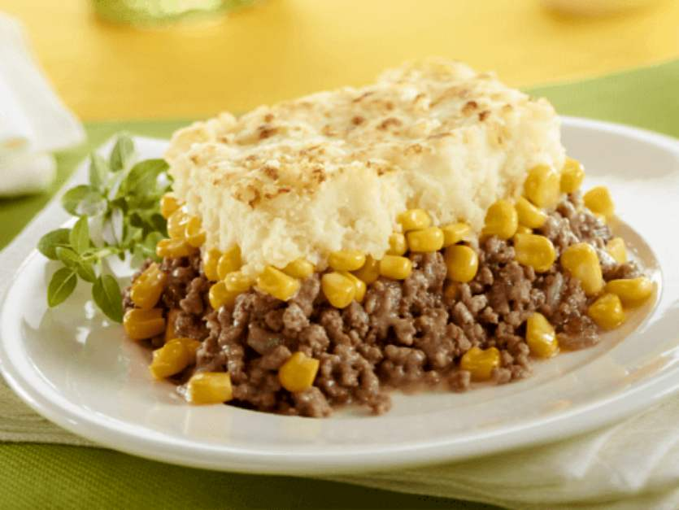

The recipe of Le pâté chinois

Pâté chinois (pronounced [pɑte ʃinwa]) ('Chinese pie') is a French Canadian dish similar
to the English shepherd's pie or French hachis Parmentier. It is a traditional recipe in both Québécois
cuisine and Acadian cuisine.
The dish is made with layered ground beef (sometimes mixed with sautéed diced onions) on the bottom, canned corn
(either whole-kernel, creamed, or a mixture) for the middle layer, and mashed potatoes on top. Seasonings may be
added to the top. Variations may include reversing the layering of ingredients with potatoes at the bottom, then meat,
topped with creamed corn; adding diced bell peppers to the ground beef; and serving the dish with pickled eggs or beets.
Once served, ketchup can be added.
Ingredients
- 4 cups (680 g) russet or Yukon Gold potatoes, peeled and cubed
- 1/4 cup (55 g) butter, approximately
- 1/2 cup (125 ml) milk, approximately
- 1 onion, finely chopped
- 1 lb (450 g) lean or semi-lean ground beef
- 1 can (19 oz/540 ml) creamed corn
- Paprika, to taste
- Dried parsley, to taste
Preparation
- In a large pot of salted water, cook the potatoes until very tender. Drain.
- With a masher, coarsely crush the potatoes with at least 2 tbsp of the butter. With an electric mixer, purée with the milk. Season with salt and pepper. Set aside.
- With the rack in the middle position, preheat the oven to 375°F (190°C).
- In a large skillet, brown the onion in the remaining butter. Add the meat and cook until golden brown. Season with salt and pepper. Remove from the heat.
- Lightly press the meat into the bottom of an 8-inch (20 cm) square baking dish. Cover with the corn and the mashed potatoes. Sprinkle with paprika and parsley.
- Bake for 30 minutes. Finish cooking under the broiler. Let cool for 10 minutes.
Go back